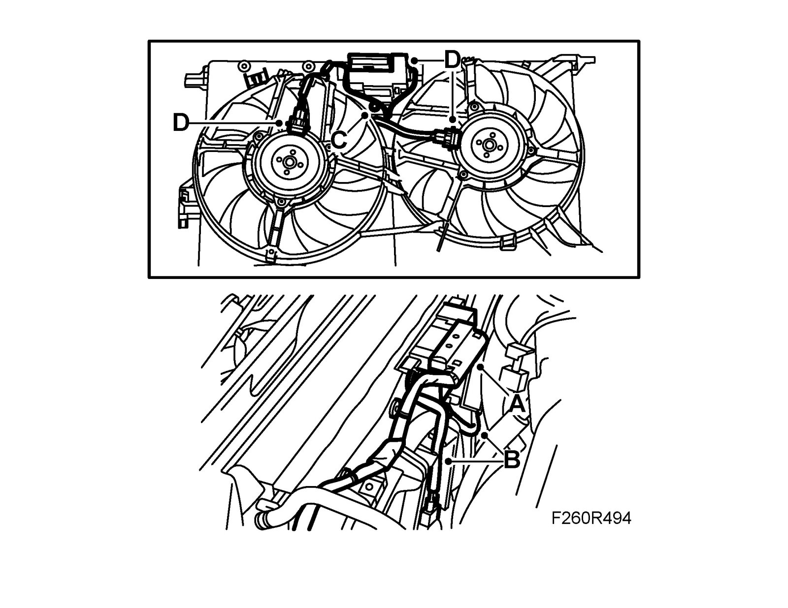

Radiator Cooling Fan Motor Relay: Service and Repair
Radiator fan relay unit (706)To remove
Important
Take care when releasing the locking mechanism on the connector so as not to damage the connector. Pull the halves straight apart to avoid bending the pins. For further information regarding connectors, refer to Connectors, handling and inspection.
1. Unplug the radiator fan's connector (A)

2. Unhook the cable from the cable attachment (B).
3. Undo the screw on the relay unit (C).
4. Remove the relay unit (D) and lift it out.
To fit
1. Fit the relay unit (D) and fit the screw (C).

2. Fit the cable in the cable attachment (B).
Important
Take care when plugging in the connector so as not to damage or press out the pins/sleeves in the connector. For further information regarding connectors, refer to Connectors, handling and inspection.
3. Plug in the radiator fan's connector (A).